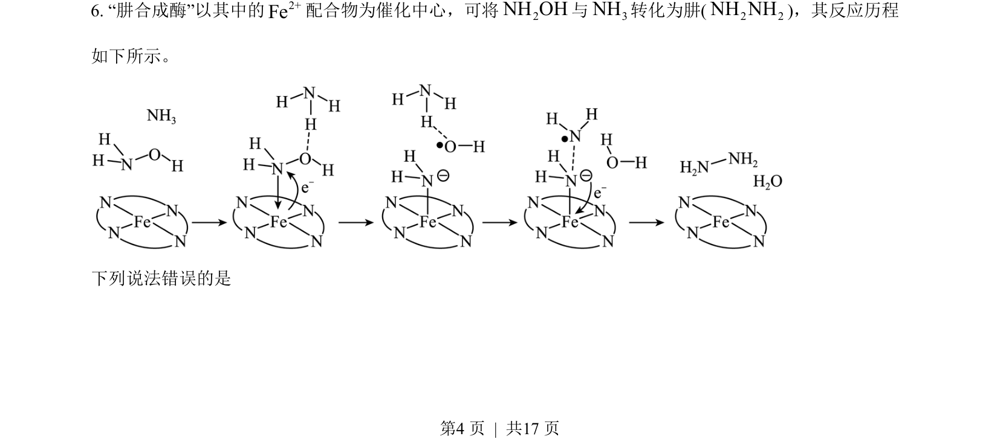
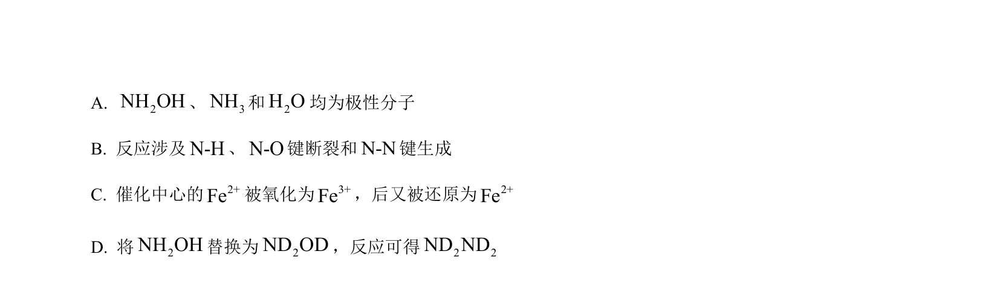
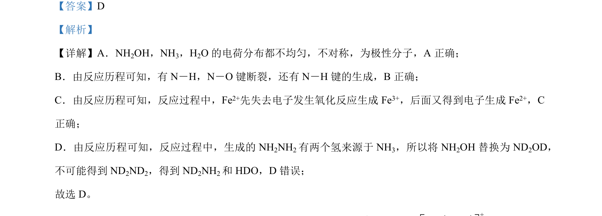

考点：极性分子判断 化学键断裂与生成 氧化还原反应 同位素效应
极性分子判断
化学键断裂与生成
氧化还原反应
同位素效应


本题通过反应历程分析分子极性、化学键变化及同位素取代产物正误判断。

📄 原 PDF 第 4 页：素材/真题/吉林/2008-2024·（吉林）化学高考真题/2023年高考化学试卷（新课标）（解析卷）.pdf
素材/真题/吉林/2008-2024·（吉林）化学高考真题/2023年高考化学试卷（新课标）（解析卷）.pdf